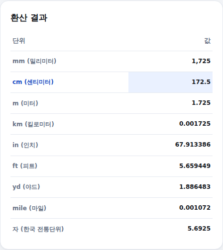

mm, 인치, 피트처럼 서로 다른 길이 단위를 자주 오가며 계산해야 할 때가 있습니다. 길이 변환기는 값과 단위 하나만 입력하면 나머지 모든 단위를 한 번에 계산해드립니다. 쓰는 법은 아래와 같습니다.
-
값과 단위 입력
변환하고 싶은 숫자를 넣고, 오른쪽 드롭다운에서 그 숫자의 단위를 골라주세요. 소수점도 입력할 수 있습니다.
값·단위 입력 화면
-
결과 확인 — 전체 단위 동시 변환
아래 표에 mm·cm·m·km·인치·피트·야드·마일·자까지 9개 단위로 변환된 값이 한 번에 나옵니다. 방금 입력한 단위 행은 파란색으로 표시됩니다. 예를 들어 172.5cm를 입력하면 인치·피트로는 각각 얼마인지 바로 확인할 수 있습니다.

변환 결과 화면 (172.5cm 입력 예시)
변환 기준
mm·cm·m·km은 미터법(SI) 정의에 따른 정확한 배수입니다. 인치·피트·야드·마일은 1959년 국제 야드-파운드 협약 기준(1인치 = 2.54cm)으로, 오차 없이 정확하게 계산됩니다. 자(尺)는 대한민국 계량법 기준 1자 = 10/33m(약 30.303cm)로 환산했습니다.
계산은 참고용입니다. 기준: 국제 야드-파운드 협약(1959), 대한민국 계량법.